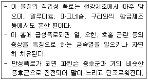
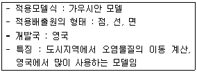
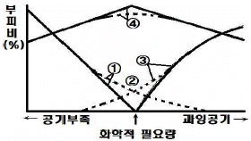
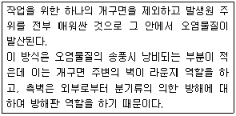
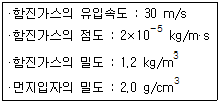
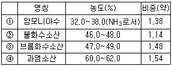
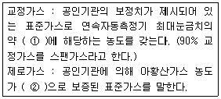
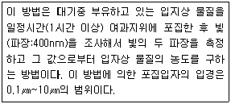
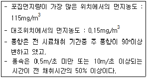
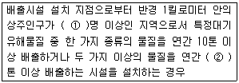

대기환경기사 (2015-03-08 기출문제)
1과목: 대기오염 개론
1. 지구 대기의 성질에 관한 설명으로 옳지 않은 것은?
- 지표면의 온도는 약 15℃ 정도이나 상공 12km 정도의 대류권계면에서는 약 -55℃ 정도까지 하강한다.
- 성층권계면에서의 온도는 지표보다는 약간 낮으나 성층권계면 이상의 중간권에서 기온은 다시 하강한다.
- 중간권 이상에서의 온도에서는 대기의 분자운동에 의해 결정된 온도로서 직접 관측된 온도와는 다르다.
- 대류권과 비교하였을 때 열권에서 분자의 운동속도는 매우 느리지만 공기평균자유행로는 짧다.
(정답률: 76%)

2. 최대혼합고도를 400m로 예상하여 오염농도를 6ppm으로 추정하였는데 실제 관측된 최대혼합고도는 200m 였다. 이 때 실제 나타날 오염농도는?
- 9ppm
- 16ppm
- 32ppm
- 48ppm
(정답률: 68%)
3. 오존층에 관한 다음 설명 중 옳지 않은 것은?
- 오존층이란 성층권에서도 오존이 더욱 밀집해 분포하고 있는 지상 50-60km 정도의 구간을 말한다.
- 오존층의 두께를 표시하는 단위는 돕슨(Dobson)이며, 지구대기 중의 오존총량을 표준상태에서 두께로 환산했을 때 1mm를 100돕슨으로 정하고 있다.
- 오존총량은 적도상에서 약 200돕슨, 극지방에서 약 400돕슨 정도인 것으로 알려져 있다.
- 오존은 성층권에서는 대기중의 산소분자가 주로 240nm 이하의 자외선에 의해 광분해되어 생성된다.
(정답률: 76%)
4. 최대혼합깊이(MMD)에 관한 설명으로 옳지 않은 것은?
- 야간에 역전이 심한 경우에는 점차 증가하여 그 값이 5000m 이상이 될 수도 있다.
- 통상적으로 계절적으로는 이른 여름에 아주 크다.
- 열부상효과에 의하여 대류에 의한 혼합층의 깊이가 결정되는데 이를 MMD라 한다.
- 실제로 MMD는 지표위 수 km까지의 실제 공기의 온도종단도를 작성함으로써 결정된다.
(정답률: 79%)
5. 다음 식물 중 아황산가스에 대한 저항력이 가장 큰 것은?
- 까치밤나무
- 포도
- 단풍
- 등나무
(정답률: 76%)
6. 다음 설명하는 대기오염물질로 가장 적합한 것은?

- 비소
- 수은
- 망간
- 납
(정답률: 68%)
7. 대기의 특성에 관한 설명으로 옳지 않은 것은?
- 성층권에서는 오존이 자외선을 흡수하여 성층권의 온도를 상승시킨다.
- 지표부근의 표준상태에서의 건조공기의 구성성분은 부피농도로 질소 ＞ 산소 ＞ 아르곤 ＞ 이산화탄소의 순이다.
- 대기의 온도는 위쪽으로 올라갈수록, 대류권에서는 하강, 성층권에서는 상승, 열권에서는 하강한다.
- 대류권의 고도는 겨울철에 낮고, 여름철에 높으며, 보통 저위도 지방이 고위도 지방에 비해 높다.
(정답률: 75%)
8. 상업지역에 분진의 농도를 측정하기 위하여 여과지를 통하여 0.2m/sec의 속도로 2.5시간 동안 여과시킨 결과 깨긋한 여과지에 비해 사용한 여과지의 빛전달율이 60%이었다면 1000m당의 Coh는?
- 12.3
- 6.2
- 3.6
- 3.1
(정답률: 51%)
9. 다음 중 Panofsky에 의한 리차드슨수(Ri) 크기와 대기의 혼합간의 관계에 따른 설명으로 거리가 먼 것은?
- Ri = 0 : 수직방향의 혼합이 없다.
- 0 ＜ Ri ＜ 0.25 : 성층에 의해 약화된 기계적 난류가 존재한다.
- Ri ＜ -0.04 : 대류에 의한 혼합이 기계적 혼합을 지배한다.
- -0.03 ＜ Ri ＜ 0 : 기계적 난류와 대류가 존재하나 기계적 난류가 혼합을 주로 일으킨다.
(정답률: 73%)
10. 상대습도가 70%일 때 분진의 농도가 50㎍/m3인 지역이 있다. 이 지역의 가시거리는? (단, 상수 A = 1.2 이다.)
- 24km
- 20km
- 15km
- 32km
(정답률: 70%)
11. 해륙풍에 대한 다음 설명 중 옳지 않은 것은?
- 낮에는 해풍, 밤에는 육풍이 발달한다.
- 해풍은 대규모 바람이 약한 맑은 여름날에 발달하기 쉽다.
- 육풍은 해풍에 비해 풍속이 크고, 수직·수평적인 영향범위가 넓은 편이다.
- 해풍의 가장 전면(내륙 쪽)에서는 해풍이 급격히 약해져서 수렴구역이 생기는데 이 수렴구역을 해풍전선이라 한다.
(정답률: 76%)
12. 태양상수를 이용하여 지구표면의 단위면적이 1분 동안에 받는 평균 태양에너지를 구하는 식으로 적합한 것은? (단, Cw: 평균 태양에너지, C: 태양상수, R: 지구반지름)
- Cw = C × [(πR2/4πR2)]
- Cw = C × [(4πR2/πR2)]
- Cw = C × [(πR/2πR2)]
- Cw = C × [(2πR/πR2)]
(정답률: 60%)
13. 바람의 요소 중 전향력과 관련된 설명으로 옳지 않은 것은?
- 지구의 자전에 의해 생기는 가속도를 전향가속도라 하고 이 가속도에 의한 힘을 전향력이라 한다.
- 전향력의 크기는 적도에서 가장 크며, 위도가 높아질수록 작아진다.
- 전향력은 북반구에서는 움직이는 물체의 운동방향의 오른쪽 직각방향으로 작용한다.
- 코리올리의힘이라고도 하며, 경도력과 반대방향으로 작용한다.
(정답률: 71%)
14. 200℃, 1atm에서 이산화황의 농도가 2.0g/m3 이다. 표준상태에서는 약 몇 ppm 인가?
- 986
- 1213
- 1759
- 2314
(정답률: 57%)
15. 역전(Inversion)에 관한 설명으로 옳지 않은 것은?
- 난류역전, 해풍역전은 지표역전에 해당한다.
- 침강역전, 전선역전은 공중역전에 해당한다.
- 해풍역전은 이동성이므로 오염물질을 오랫동안 정체시키지는 않는 편이다.
- 복사역전층에서는 안개가 발생하기 쉽고 매연이 쉽게 확산하지 못하는 편이다.
(정답률: 67%)
16. 다음 설명하는 대기분산모델로 가장 적합한 것은?

- OCD
- UAM
- ISCLT
- ADMS
(정답률: 69%)
17. 대기오염가스를 배출하는 굴뚝의 유효고도가 87m에서 100m로 높아졌다면 굴뚝의 풍하측 지상의 최대 오염농도는 87m일 때의 것과 비교하여 몇 % 가 되겠는가? (단, 기타 조건은 일정)
- 47%
- 62%
- 76%
- 88%
(정답률: 61%)
18. 오염물질에 대한 식물피해에 관한 설명으로 가장 거리가 먼 것은?
- 황화수소는 어린 잎과 새싹에 피해가 많은 편이며, 강한 식물로는 복숭아, 딸기 등이다.
- 에틸렌은 고목의 생장저해가 특징적이며, 글라디올러스가 가장 민감한 편이며, 0.1ppb에서 피해가 인정된다.
- 암모니아는 잎 전체에 영향을 주는 편이다.
- 일산화탄소는 식물에는 별로 심각한 영향을 주지 않으나 500ppm 정도에서 토마토 잎에 피해를 보인다.
(정답률: 56%)
19. 다이옥신(Dioxin)에 관한 설명 중 옳지 않은 것은?
- 표준상태에서 증기압이 매우 낮은 고형 화합물이다.
- 다이옥신류는 크게 PCDD, PCDF로 대별된다.
- 수용성은 낮으나 벤젠 등에 용해되며 토양 등에 흡수된다.
- 소각로에서 1000℃ 정도의 고온온도에서 fly ash 표면에 염소 공여체와 반응하여 배출된다.
(정답률: 58%)
20. 다음 중 대기오염 물질의 농도를 추정하기 위한 상자모델(box model)의 가정으로 적합하지 않은 것은?
- 고려되는 공간에서 오염물의 농도는 균일하다.
- 오염원은 방출과 동시에 균등하게 혼합된다.
- 오염물농도가 균일함에 따라 분해는 0차반응에 의한다.
- 오염방출원이 지면전역에 균등하게 분포되어 있다.
(정답률: 76%)
2과목: 연소공학
21. 공기를 사용하여 CO를 완전연소 시킬 때 연소가스 중의 CO2 농도의 최대치는?
- 19.7%
- 21.3%
- 29.3%
- 34.7%
(정답률: 42%)
22. A연소시설에서 연료중 수소를 10% 함유하는 중유를 연소시킨 결과 건조연소가스 중의 SO2 농도가 600ppm이었다. 건조연소가스량이 13Sm3/kg이라면 실제습배가스량 중 SO2 농도(ppm)는?
- 약 350
- 약 450
- 약 550
- 약 650
(정답률: 39%)
23. 황(S)함량 1.6% 인 중유를 500kg/h 로 연소할 때 30분 동안 생성되는 황산화물의 양(Sm3)은? (단, 중유 중 황은 모두 SO2 로 되며, 표준상태 기준)
- 2.8
- 5.6
- 11.2
- 22.4
(정답률: 48%)
24. 화격자식(스토커) 소각로에 관한 설명으로 옳지 않은 것은?
- 휘발성분이 많고 열분해 되기 쉬운 물질을 소각할 경우에는 공기를 아래쪽에서 위쪽으로 통과시키는 상향연소방식을 사용하는 것이 효과적이다.
- 경사 스토커 방식의 경우 수분이 많은 것이나 발열량이 낮은 것도 어느 정도 소각이 가능하다.
- 체류시간이 길고 교반력이 약한 편이어서 국부가열이 발생할 염려가 있다.
- 하향식 연소는 상향식 연소에 비해 소각물의 양은 절반 정도로 감소한다.
(정답률: 55%)
25. 쓰레기 재생연료(RDF)에 관한 설명으로 가정 거리가 먼 것은?
- 쓰레기 재생연료를 연소시키는 데는 회전로울러식이 사슬상화격자 연소기보다 효율이 좋으며, 도시쓰레기의 소각에 비해 제어가 용이하지 않은 단점이 있다.
- 쓰레기 재생연료의 소각에서 연료의 체재시간이 높은 온도에서 충분히 길지 않고(800-850℃에서 2초 이상)시스템이 제대로 가동 못할 시에는 염소를 포함하는 플라스틱이 잔존하여 다이옥신 등의 배출이 문제가 될 수 있다.
- fluff RDF는 겉보기 밀도가 낮고, 비교적 수분함량이 높아서 저장하거나 수송하기가 어려운 단점이 있다.
- 쓰레기 재생연료는 고정탄소가 석탄에 비해 적은 반면 휘발분이 많다.
(정답률: 44%)
26. 어떤 화학과정에서 반응물질이 25% 분해하는데 41.3분 걸린다는 것을 알았다. 이 반응이 1차라고 가정할 때, 속도상수 K는?
- 1.437×10-4s-1
- 1.232×10-4s-1
- 1.161×10-4s-1
- 1.022×10-4s-1
(정답률: 64%)
27. 연소(화염)온도에 관한 설명으로 가장 적합한 것은?
- 이론 단열 연소온도는 실제 연소온도보다 높다.
- 공기비를 크게 할수록 연소온도는 높아진다.
- 실제 연소온도는 연소로의 열손실에는 거의 영향을 받지 않는다.
- 평형 단열 연소온도는 이론 단열 연소온도와 같다.
(정답률: 53%)
28. 다음 중 가솔린자동차에 적용되는 삼원촉매기술과 관련된 오염물질과 거리가 먼 것은?
- SOx
- NOx
- HC
- CO
(정답률: 67%)
29. 등가비(Φ, equivalent ratio)와 연소상태와의 관계를 설명한 것 중 옳지 않은 것은?
- Φ=1 경우는 완전 연소로 연료와 산화제의 혼합이 이상적이다.
- Φ ＞ 1 경우는 연료가 과잉, 질소산화물(NO)은 최대발생
- Φ ＜ 1 경우는 공기가 과잉, CO는 최소
- Φ ＞ 1 경우는 불완전 연소가 발생, 연료가 과잉
(정답률: 63%)
30. S함량 3%의 벙커 C유 100kL를 사용하는 보일러에 S함량 1%인 벙커 C유로 30% 섞어 사용하면 SO2 배출량은 몇 % 감소하는가? (단, 벙커 C유 비중 0.95, 벙커 C유 중의 S는 모두 SO2로 전환됨)
- 16%
- 20%
- 25%
- 28%
(정답률: 54%)
31. 탄소, 수소의 중량 조성이 각각 86%, 14%인 액체연료를 매시 30kg 연소한 경우 배기가스의 분석치가 CO2 12.5%, O2 3.5%, N2 84%이라면 매시간 필요한 공기량(Sm3)은?
- 약 794
- 약 675
- 약 591
- 약 406
(정답률: 47%)
32. 다음 연료 중 착화점이 가장 높은 것은?
- 갈탄(건조)
- 발생로가스
- 수소
- 무연탄
(정답률: 45%)
33. 다음 기체연료 중 완전연소에 필요한 이론공기량(Sm3/Sm3)이 가장 많이 필요한 것은?
- 수소
- 액화석유가스
- 메탄
- 에탄
(정답률: 57%)
34. 다음 중 기체연료의 확산연소에 사용되는 버너 형태로 가장 적합한 것은?
- 공기 분무식 버너
- 심지식 버너
- 회전식 버너
- 포트형 버너
(정답률: 61%)
35. 미분탄 연소에 관한 설명으로 옳지 않은 것은?
- 부하변동에 쉽게 적용할 수 있으므로 대형과 대용량 설비에 적합하다.
- 노벽 및 전열면에 쌓이는 재를 최소화시킬 수 있으며 화격자 연소에 비하여 공기비는 동일 수준이다.
- 연소제어가 용이하고, 점화 및 소화시 손실이 적은 편이다.
- 스토커연소에 비해 공기와의 접촉 및 열전달도 좋아지므로 작은 공기비로 완전연소가 가능한 편이다.
(정답률: 55%)
36. 예혼합연소에 관한 설명으로 옳은 것은?
- 혼합기의 분출속도가 느릴 경우 역화의 위험이 있으므로 역화방지기를 부착해야 한다.
- 화염온도가 낮아 연소부하가 적은 경우에 효과적으로 사용가능하다.
- 예혼합연소에 사용되는 버너로 선회버너, 방사버너가 있다.
- 연소조절이 어렵고, 화염길이가 길다.
(정답률: 51%)
37. 다음 연소의 종류 중 흑연, 코오크스, 목탄 등과 같이 대부분 탄소만으로 되어있는 고체연료에서 관찰되는 연소형태는?
- 표면 연소
- 내부 연소
- 증발 연소
- 자기 연소
(정답률: 75%)
38. 프로판(C3H8)을 완전연소 하였을 때, 건연소가스 중의 CO2가 8%(V/V%)이었다. 공기 과잉계수 m은 얼마인가?
- 1.32
- 1.43
- 1.52
- 1.66
(정답률: 45%)
39. 다음 그림은 연소시 공기-연료비에 따르는 HC, CO, CO2, O2 의 발생량을 나타낸 것이다. ④의 항목에 해당되는 것은? (단, 실선은 이론, 점선은 실제의 관계를 나타냄)

- O2
- HC
- CO2
- CO
(정답률: 59%)
40. 르샤틀리에가 주장한 열역학적인 평형이동에 관한 원리를 가장 적합하게 설명한 것은?
- 평형상태에 있는 물질계의 온도, 압력을 변화시키면 그 변화를 감소시키는 방향으로 반응이 진행된다.
- 평형상태에 있는 물질계의 온도, 압력을 변화시키면 그 변화를 증가시키는 방향으로 평형이동이 진행된다.
- 평형상태에 있는 물질계의 온도, 압력을 변화시키면 그 변화는 도중의 경로에 관계하지 않고 시작과 끝 상태만으로 결정된다.
- 평형상태에 있는 물질계의 온도, 압력을 변화시키면 그 변화는 압력에는 무관하고, 온도변화를 감소시키는 방향으로 반응이 진행된다.
(정답률: 55%)
3과목: 대기오염 방지기술
41. 원형 Duct의 기류에 의한 압력손실에 관한 설명으로 옳지 않은 것은?
- 길이가 길수록 압력손실은 커진다.
- 유속이 클수록 압력손실은 커진다.
- 직경이 클수록 압력손실은 작아진다.
- 곡관이 많을수록 압력손실은 작아진다.
(정답률: 70%)
42. 가스처리방법 중 흡착(물리적기준)에 관한 내용으로 가장 거리가 먼 것은?
- 흡착열이 낮고 흡착과정이 가역적이다.
- 다분자 흡착이며 오염가스 회수가 용이하다.
- 처리할 가스의 분압이 낮아지면 흡착량은 감소한다.
- 처리가스의 온도가 올라가면 흡착량이 증가한다.
(정답률: 56%)
43. 사업장에서 발생되는 케톤(Ketone)류를 제어하는 방법 중 제어효율이 가장 낮은 방법은?
- 직접소각법
- 응축법
- 흡착법
- 흡수법
(정답률: 49%)
44. 다음 중 전기집진장치에서 코로나 방전시 부(-)코로나 방전을 이용하는 이유로 가장 적합한 것은? (단, 정(+)코로나 방전 시와 비교)
- 코로나 방전개시 전압이 낮기 때문에
- 불꽃 방전개시 전압이 낮기 때문에
- 적은 양의 코로나 전류를 흘릴 수 있기 때문에
- 낮은 전계강도를 얻을 수 있기 때문에
(정답률: 56%)
45. 기상 총괄이동단위높이가 2m인 충전탑을 이용하여 배출가스 중의 HF를 NaOH 수용액으로 흡수제거하려 할 때, 제거율을 98%로 하기 위한 충전탑의 높이는?
- 5.6m
- 5.9m
- 6.5m
- 7.8m
(정답률: 49%)
46. 촉매연소법에 관한 설명으로 옳지 않은 것은?
- 촉매는 백금, 코발트, 니켈 등이 있으나, 고가이지만 성능이 우수한 백금계의 것이 많이 이용된다.
- 직접연소법에 비해 연료소비량이 적어 운반비는 절감되나, 촉매독이 문제가 된다.
- 직접연소법에 비해 질소산화물의 발생량이 높고, 고농도로 배출된다.
- 적용가능한 악취성분은 가연성 악취성분, 황화수소, 암모니아 등이 있다.
(정답률: 63%)
47. 다음 중 다른 VOC 방지장치와 상대 비교한 생물여과장치의 특성으로 가장 거리가 먼 것은?
- CO 및 NOx를 포함한 생성 오염부산물이 적거나 없다.
- 고농도 오염물질의 처리에 적합하고, 설치가 복잡한 편이다.
- 습도제어에 각별한 주의가 필요하다.
- 생체량의 증가로 장치가 막힐 수 있다.
(정답률: 66%)
48. A먼지 배출공장에 집진율 85%인 사이클론과 집진율 96%인 전기집진 장치를 직렬로 연결하여 설치하였다. 이 때 총 집진효율은?
- 90.4%
- 94.4%
- 96.4%
- 99.4%
(정답률: 61%)
49. 아래 후드 형식으로 가장 적합한 것은?

- 수(receiving)형 후드
- 슬롯(slot)형 후드
- 부스(booth)형 후드
- 캐노피(canopy)형 후드
(정답률: 64%)
50. 전기집진장치 유지관리에 관한 사항으로 가장 거리가 먼 것은?
- 시동 시 고전압 회로의 절연저항이 100kΩ 이상 되어야 한다.
- 운전 시 1차 전압이 낮은데도 과도한 2차 전류가 흐를 때는 고압회로의 절연불량은 경우가 많다.
- 운전 시 2차 전류가 주기적으로 변동하는 것은 방전극에 의한 영향이 크다.
- 정지 시 접지저항은 적어도 년 1회 이상 점검하고 10Ω 이하로 유지한다.
(정답률: 57%)
51. 여과집진장치에 관한 설명으로 옳지 않은 것은?
- 폭발성, 점착성 및 흡습성 분진의 제거에 효과적이다.
- 여과재의 내열성에서는 고온가스 냉각 시 산노점(dew point) 이상으로 유지해야 한다.
- 간헐식은 여포의 수명이 연속식에 비해 길다.
- 간헐식은 탈진방법에 따라 진동형, 역기류형, 역기류진동형으로 분류할 수 있다.
(정답률: 55%)
52. 층류의 흐름인 공기 중을 입경이 2.2㎛, 밀도가 2400g/L인 구형입자가 자유낙하하고 있다. 이 때 구형입자의 종말속도는? (단, 20℃에서의 공기 점도는 1.81×10-4 poise 이다.)
- 3.5×10-6 m/s
- 3.5×10-5 m/s
- 3.5×10-4 m/s
- 3.5×10-3 m/s
(정답률: 44%)
53. 먼지함유량이 A인 배출가스에서 C만큼 제거시키고 B만큼을 통과시키는 집진장치의 효율산출식으로 거리가 먼 것은?
- C/A
- C/(B+C)
- B/A
- (A-B)/A
(정답률: 63%)
54. 황산화물 배출제어 방법 중 재생식 공정으로 가장 적절한 것은?
- 석회석법
- 웰만-로드법
- Chiyoda 법
- 이중염기법
(정답률: 52%)
55. Henry 법칙이 적용되는 가스로서 공기 중 유해가스의 분압이 16mmHg일 때, 수중 유해가스의 농도는 3.0 kmol/m3이었다. 같은 조건에서 가스분압이 435mmH2O 가 되면 수중 유해가스의 농도는?
- 1.5 kmol/m3
- 3.0 kmol/m3
- 6.0 kmol/m3
- 7.5 kmol/m3
(정답률: 54%)
56. 유입구 폭이 20cm, 유효회전수가 8인 사이클론에 아래 상태와 같은 함진가스를 처리하고자 할 때, 이 함진가스에 포함된 입자의 절단입경(㎛)은?

- 2.78
- 3.46
- 4.58
- 5.32
(정답률: 39%)
57. 악취물질의 성질과 발생원에 관한 설명으로 옳지 않은 것은?
- 아크로레인(CH2CHCHO)은 자극취 물질로 석유화학, 약품제조시에 발생된다.
- 메틸메르캅탄(CH3SH)은 부패양파취 물질로 석유정제, 가스제조, 약품제조시에 발생된다.
- 황화수소(H2S)는 썩은 계란취 물질로 석유정제나 약품제조시에 발생된다.
- 에틸아민(C2H5NH2)은 마늘취 물질로 석유정제, 인쇄작업장에서 발생한다.
(정답률: 56%)
58. 흡착장치에 관한 다음 설명 중 가장 거리가 먼 것은?
- 고정층 흡착장치에서 보통 수직으로 된 것은 대규모에 적합하고, 수평으로된 것은 소규모에 적합하다.
- 일반적으로 이동층 흡착장치는 유동층 흡착장치에 비해 가스의 유속을 크게 유지할 수 없는 단점이 있다.
- 유동층 흡착장치는 고정층과 이동층 흡착장치의 장점만을 이용한 복합형으로 고체와 기체의 접촉을 좋게 할 수 있다.
- 유동층 흡착장치는 흡착제의 유동에 의한 마모가 크게 일어나고, 조업조건에 따른 주어진 조건의 변동이 어렵다.
(정답률: 62%)
59. 중력침전을 결정하는 중요 매개변수는 먼지입자의 침전속도이다. 다음중 이 침전속도 결정 시 가장 관계가 깊은 것은?
- 입자의 유해성
- 입자의 크기와 밀도
- 대기의 분압
- 입자의 온도
(정답률: 68%)
60. 광학현미경으로 입자의 투영면적을 이용하여 측정한 먼지입경 중 입자의 투영면적을 2등분하는 선의 길이로 나타내는 것은?
- Martin 직경
- Feret 직경
- 등면적 직경
- Heyhood 직경
(정답률: 71%)
4과목: 대기오염 공정시험기준(방법)
61. 화학반응 등에 따라 굴뚝으로부터 배출되는 이황화탄소를 흡광광도법으로 정량할 때 흡수액으로 옳은 것은?
- 수산화제이철암모늄용액
- 디에틸아민동용액
- 아연아민착염용액
- 제일염화주석용액
(정답률: 62%)
62. 공정시험기준 중 일반화학분성에 대한 공통적인 사항으로 따로 규정이 없는 경우 사용해야 하는 시약의 규격으로 옳지 않은 것은?

- ①
- ②
- ③
- ④
(정답률: 59%)
63. 굴뚝 배출가스 중 총탄화수소 측정에 관한 설명으로 옳지 않은 것은?
- 불꽃이온화검출(FID)법에서의 결과 농도는 프로판(또는 알칸계 표준물질) 또는 탄소등가농도로 환산하여 표시한다.
- 불꽃이온화검출(FID)법의 경우 배출원에서 채취된 시료는 여과재 등을 이용하여 먼지를 제거한 후 가열채취관을 통하여 불꽃이온화분석기 (Flame Ionization Analyzer)로 유입되어 분석된다.
- 반응시간은 오염물질의 농도의 단계변화에 따라 최종값의 50%이상에 도달 하는 시간을 말한다.
- 시료채취관은 스테인레스강 또는 이와 동등한 제질의 것으로 하고 굴뚝중심 부분의 10%범위 내에 위치할 정도의 길이의 것을 사용한다.
(정답률: 61%)
64. 굴뚝 내부 단면의 가로 길이가 2m이고, 세로 길이가 1.5m일 때 이 굴뚝의 환산직경은? (단, 굴뚝 단면은 사각형이며, 상하 동일 단면적을 가진 굴뚝이다.)
- 1.5m
- 1.7m
- 1.9m
- 2.0m
(정답률: 56%)
65. 가스크로마토그래프의 설치조건(장소, 전기관계)으로 가장 거리가 먼 것은?
- 분석에 사용하는 유해물질을 안전하게 처리할 수 있는 곳이어야 한다.
- 접지점의 접지저항은 20-25Ω 범위이내이어야 한다.
- 전원변동은 지정전압의 10% 이내로서 주파수 변동이 없는 것이어야 한다.
- 실온 5-35℃, 상대습도 85% 이하로 직사광선이 쪼이지 않는 곳이어야 한다.
(정답률: 53%)
66. 굴뚝 배출가스 중의 질소산화물을 페놀디슬폰산법으로 측정하는 방법에 관한 설명으로 옳지 않은 것은?
- 시료중의 질소산화물을 산화흡수제(황산+과산화수소수)에 흡수시켜 질산이온으로 만든다.
- NOx를 질산이온으로 만들고, 페놀디슬폰산을 반응시켜 얻어지는 착색액의 흡광도로부터 이산화질소를 정량한다.
- 시료중의 질소산화물 농도가 약 0.5-10 V/Vppm인 것의 분석에 적당하다.
- 할로겐 화합물이 존재하면 분석결과에 부의 오차가, 무기질산염, 아질산염은 정오차가 생기는 경향이 있다.
(정답률: 44%)
67. 다음은 굴뚝배출가스중 아황산가스를 연속적으로 자동측정하는 방법에 사용되는 용어에 관한 설명이다. ( )안에 알맞은 것은?

- ① 10%와 30%, ② 0.1ppm 미만
- ① 10%와 60%, ② 0.1ppm 미만
- ① 30%와 60%, ② 1ppm 미만
- ① 50%와 90%, ② 1ppm 미만
(정답률: 59%)
68. 연료용 유류 중의 황 함유량을 측정하기 위한 분석방법은?
- 방사선식 여기법
- 자동 연속 열탈착 분석법
- 테들라 백-열 탈착법
- 몰린 형광 광도법
(정답률: 50%)
69. 비분산 적외선 가스 분석법에 관한 설명으로 옳지 않은 것은?
- 선택성 검출기를 이용하여 시료중의 특정성분에 대한 적외선 흡수량 변화를 측정한다.
- 광원은 원칙적으로 니크롬선 또는 탄화규소의 저항체에 전류를 흘려 가열한 것을 사용한다.
- 분석계의 최저 눈금값을 교정하기 위하여 제로가스를 사용한다.
- 적외선 가스 분석계는 교호단속 분석계와 동시단속 분석계로 분류한다.
(정답률: 36%)
70. 원자흡광광도법에서 사용되는 용어의 정의로 옳지 않은 것은?
- 근접선 : 목적하는 스펙트럼선에 가까운 파장을 갖는 다른 스펙트럼선
- 선프로파일 : 파장에 대한 스펙트럼선의 강도를 나타내는 곡선
- 충전가스 : 불꽃 단락을 방지하기 위해 분무버너에 채우는 가스
- 다연료 불꽃 : 가연성 가스/조연성 가스의 값을 크게한 불꽃
(정답률: 42%)
71. 다음은 환경대기 내의 먼지 측정 시험방법 중 어떤 측정법에 관한 설명인가?

- 광산란법
- 광투과법
- 광흡착법
- 베타선법
(정답률: 46%)
72. 흡광광도법(Absorptiometric Analysis)에 관한 다음 설명중 가장 거리가 먼 것은?
- 가시부와 근적외부의 광원으로는 주로 텅스텐램프를, 자외부의 광원으로는 주로 중수소 방전관을 사용한다.
- 광전관, 광전자증배관은 주로 자외 내지 가시파장 범위에서, 광전도셀은 근적외 파장범위에서의 광전측광에 사용한다.
- 흡수셀의 유리제는 주로 자외부 파장범위를, 플라스틱제는 근적외부 및 가시광선 파장범위를 측정할 때 사용한다.
- 흡광도의 눈금보정은 중크롬산칼륨용액으로 한다.
(정답률: 50%)
73. 어떤 가스크로마토그램에 있어 성분 A의 보유시간은 10분, 피이크 폭은 8mm였다. 이 경우 성분 A의 HETP(1이론단에 해당하는 분리관의 길이)는? (단, 분리관의 길이는 10m, 기록지의 속도는 매분 10mm)
- 2mm
- 4mm
- 6mm
- 8mm
(정답률: 32%)
74. 티오시안산제이수은법으로 염화수소를 분석할 때 필요한 시약과 관계가 없는 것은?
- 메틸알코올
- 과염소산(1+2)
- 황산제이철암모늄용액
- 질산은 용액
(정답률: 47%)
75. 다음 대상 가스별 분석방법의 연결로 옳은 것은? (단, 배출허용기준 시험방법)
- 포름알데히드 - 오르토톨리딘법
- 질소산화물 - 크로모트로핀산법
- 시안화수소 - 피리딘피라졸론법
- 페놀 - 페놀디슬폰산법
(정답률: 49%)
76. 굴뚝 배출가스 중 페놀류 분석방법(흡광광도법)으로 옳지 않은 것은?
- 4 - 아미노안티피린법은 시약을 가하여 얻어진 청색액의 시료를 610nm의 가시부에서 흡광도를 측정하여 페놀류의 농도를 산출한다.
- 4 - 아미노안티피린법은 시료중의 페놀류를 수산화나트륨용액(0.4W/V%)에 흡수시켜 포집한다.
- 흡광광도법은 시료가스 채취량이 10L인 경우 시료중의 페놀류의 농도가 1 - 20V/Vppm 범위의 분석에 적합하다.
- 염소, 취소 등의 산화성 가스 및 황화수소, 아황산가스 등의 환원성가스가 공존하면 부(負)의 오차를 나타낸다.
(정답률: 37%)
77. 분석대상가스의 종류별, 채취관 및 도관 재질의 연결로 옳지 않은 것은?
- 암모니아 - 스테인레스강
- 일산화탄소 - 석영
- 질소산화물 - 스테인레스강
- 이황화탄소 - 보통강철
(정답률: 55%)
78. 환경대기 중 휘발성유기화합물(VOCs)의 시험방법에 사용되는 용어에 관한 설명으로 옳지 않은 것은?
- 머무름부피(retention volume) : 흡착관으로부터 분석물질을 탈착하기 위하여 필요한 운반가스의 부피를 측정함으로써 결정된다.
- 흡착관의 안정화(conditioning) : 흡착관을 사용하기 전에 열탈착기에 의해서 보통 350℃(흡착제별로 사용최고온도를 고려하여 조정)에서 헬륨가스 25mL/min으로 적어도 1시간 동안 안정화시킨 후 사용한다.
- 열탈착 : 열과 불활성가스를 이용하여 흡착제로부터 휘발성유기화합물을 탈착시켜 기체크로마토그래피로 전달하는 과정이다.
- 2단 열탈착 : 흡착제로부터 분석물질을 열탈착하여 저온농축관에 농축한 다음 저온농축관을 가열하여 농축된 화합물을 기체크로마토그래피로 전달하는 과정이다.
(정답률: 50%)
79. 다음 제시된 자료에서 구한 비산먼지의 농도(mg/m3)는?

- 114.9
- 137.8
- 165.4
- 206.7
(정답률: 48%)
80. 굴뚝배출가스 중의 오염물질과 연속자동측정방법과의 연결로 옳지 않은 것은?
- 아황산가스 - 불꽃광도법
- 염화수소 - 이온전극법
- 질소산화물 - 적외선흡수법
- 불화수소 - 자외선흡수법
(정답률: 37%)
5과목: 대기환경관계법규
81. 배출허용기준 300(12)ppm에서 (12)의 의미는?
- 해당배출허용농도(백분율)
- 해당배출허용농도(ppm)
- 표준산소농도(O2의 백분율)
- 표준산소농도(O2의 ppm)
(정답률: 50%)
82. 대기환경보전법상 비산먼지 발생억제를 위한 시설을 설치해야 하는 자가 그 시설을 설치하지 않은 경우에 대한 벌칙기준은? (단, 시멘트·석탄·토사·사료·곡물 및 고철의 분체상물질 운송자는 제외)
- 100만원 이하의 과태료
- 200만원 이하의 과태료
- 300만원 이하의 벌금
- 500만원 이하의 벌금
(정답률: 40%)
83. 대기환경보전법령상 대기오염물질발생량 합계가 연간 15톤인 경우 사업장 분류기준상 몇 종에 해당하는가?
- 1종
- 2종
- 3종
- 4종
(정답률: 55%)
84. 악취방지법규상 악취검사기관이 실험일지 및 검량선 기록지, 검사 결과 발송 대장, 정도관리 수행기록철 등의 작성서류의 보존기간으로 옳은 것은?
- 1년간 보존
- 2년간 보존
- 3년간 보존
- 5년간 보존
(정답률: 52%)
85. 대기환경보전법령상 천재지변으로 사업자의 재산에 중대한 손실이 발생한 경우로 배출부과금의 징수유예를 받고자 하는 사업자의 기본부과금 징수 유예기간과 그 기간 중 분할납부횟수 기준은?
- 유예한 날의 다음날부터 다음 부과기간 개시일 전일까지, 2회 이내
- 유예한 날의 다음날부터 다음 부과기간 개시일 전일까지, 4회 이내
- 유예한 날의 다음날부터 1년 이내, 6회 이내
- 유예한 날의 다음날부터 1년 이내, 12회 이내
(정답률: 48%)
86. 대기환경보전법규상 개선명령 등의 이행보고와 관련하여 환경부령으로 정하는 대기오염도 검사기관에 해당하지 않는 것은?
- 보건환경연구원
- 유역환경청
- 한국환경공단
- 환경보전협회
(정답률: 62%)
87. 다중이용시설 등의 실내공기질 관리법의 적용대상이 되는 다중이용시설중 대통령령이 정하는 규모기준으로 옳지 않은 것은?
- 항만시설중 연면적 5천제곱미터 이상인 대합실
- 연면적 1천제곱미터 이상인 실내주차장(기계식 주차장을 포함한다.)
- 연면적 2천제곱미터 이상인 지하도상가(연속되어 있는 2 이상의 지하도상가의 연면적 합계가 2천제곱미터 이상인 경우를 포함한다.)
- 연면적 430제곱미터 이상인 국공립어린이집, 법인어린이집, 직장어린이집 및 민간어린이집
(정답률: 53%)
88. 대기환경보전법령상 대기오염물질에 대한 초과부과금 산정기준에서 1지역(주거지역·상업지역, 취락지구, 택지개발예정지구)의 지역별 부과계수는?
- 1.0
- 1.5
- 2.0
- 2.5
(정답률: 35%)
89. 다음은 대기환경보전법령상 시·도지사가 배출시설의 설치를 제한할 수 있는 경우이다. ( )안에 알맞은 것은?

- ① 1만, ② 20
- ① 2만, ② 20
- ① 1만, ② 25
- ① 2만, ② 25
(정답률: 60%)
90. 대기환경보전법규상 가스를 사용연료로 하는 경자동차의 배출가스 보증적용기간기준으로 옳은 것은? (단, 2013년 1월 1일 이후 제작자동차 기준)(오류 신고가 접수된 문제입니다. 반드시 정답과 해설을 확인하시기 바랍니다.)
- 2년 또는 10,000km
- 2년 또는 160,000km
- 6년 또는 10,000km
- 6년 또는 100,000km
(정답률: 28%)
91. 대기환경보전법규상 측정기기의 부착·운영 등과 관련된 행정처분기준중 굴뚝 자동측정기기의 부착이 면제된 보일러(사용연료를 6개월 이내에 청정연료로 변경할 계획이 있는 경우)로서 사용연료를 6월 이내에 청정연료로 변경하지 아니한 경우의 4차 행정처분기준으로 가장 적합한 것은?
- 조업정지 10일
- 조업정지 30일
- 조업정지 5일
- 경고
(정답률: 59%)
92. 대기환경보전법규상 환경부장관이 대기오염물질을 총량으로 규제하고자 할 때 고시해야 하는 사항으로 거리가 먼 것은? (단, 기타사항은 제외)
- 총량규제구역
- 총량규제 대기오염물질
- 대기오염물질의 저감계획
- 규제기준농도
(정답률: 45%)
93. 대기환경보전법규상 분체상 물질을 싣고 내리는 공정의 경우, 비산먼지 발생을 억제하기 위해 작업을 중지해야 하는 평균풍속(m/s)의 기준은?
- 2 이상
- 5 이상
- 7 이상
- 8 이상
(정답률: 53%)
94. 대기환경보전법규상 한국환경공단이 환경부장관에게 보고해야 할 위탁업무보고사항 중 "수시검사, 결함확인검사, 부품결함 보고서류의 접수"의 보고횟수기준은?
- 수시
- 연1회
- 연2회
- 연4회
(정답률: 47%)
95. 대기환경보전법규상 자동차연료 제조기준 중 휘발유의 벤젠함량(부피%) 기준은?
- 0.1 이하
- 0.5 이하
- 0.7 이하
- 2.3 이하
(정답률: 43%)
96. 대기환경보전법규상 차령 4년 경과된 비사업용 승용자동차의 정밀검사 유효기간(기준)은? (단, 차종은 자동차관리법에 따른다.)
- 1년
- 2년
- 3년
- 5년
(정답률: 47%)
97. 대기환경보전법규상 특정대기유해물질에 해당하지 않는 것은?
- 아닐린
- 아세트알데히드
- 1-3부타디엔
- 망간
(정답률: 53%)
98. 대기환경보전법상 사업자는 조업을 할 때에는 환경부령으로 정하는 바에 따라 그 배출시설과 방지시설의 운영에 관한 상황을 사실대로 기록하여 보존하여야 하나 이를 위반하여 배출시설 등의 운영상황에 관한 기록을 보존하지 아니하거나 거짓으로 기록한 자에 대한 과태료 처분기준으로 옳은 것은?(관련 규정 개정전 문제로 여기서는 기존 정답인 4번을 누르면 정답 처리됩니다. 자세한 내용은 해설을 참고하세요.)
- 1000만원 이하의 과태료
- 500만원 이하의 과태료
- 300만원 이하의 과태료
- 200만원 이하의 과태료
(정답률: 37%)
99. 대기환경보전법령상 굴뚝 자동측정기기 부착대상 배출시설이 그 부착을 면제받을 수 있는 경우로 거리가 먼 것은?
- 연소가스 또는 화염이 원료 또는 제품과 직접 접촉하지 아니하는 시설로서 규정에 따른 청정연료를 사용하는 경우(발전시설은 제외한다.)
- 부착대상시설이 된 날부터 6개월 이내에 배출시설을 폐쇄할 계획이 있는 경우
- 연간 가동일수가 60일 미만인 배출시설인 경우
- 액체연료만을 사용하는 연소시설로서 황산화물을 제거하는 방지시설이 없는 경우(발전시설은 제외하며, 황산화물 측정기기에만 부착을 면제한다.)
(정답률: 36%)
100. 대기환경보전법상 시·도지사는 터미널, 차고지 등의 장소에서 자동차의 원동기를 가동한 상태로 주차하거나 정차하는 행위를 제한할 수 있는데, 이 장소에서 자동차의 원동기 가동제한을 위반한 자동차 운전자에 대한 행정조치사항(기준)으로 옳은 것은?
- 50만원 이하의 과태료를 부과한다.
- 100만원 이하의 과태료를 부과한다.
- 200만원 이하의 과태료를 부과한다.
- 300만원 이하의 과태료를 부과한다.
(정답률: 44%)